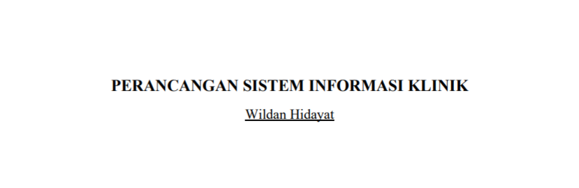
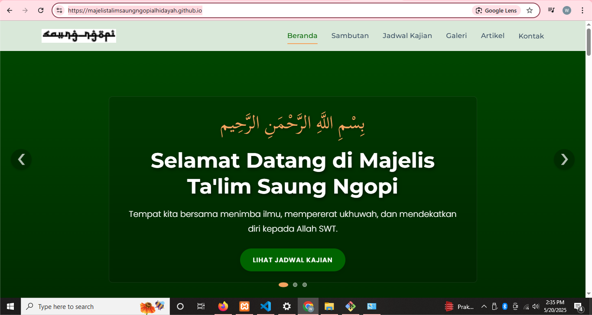
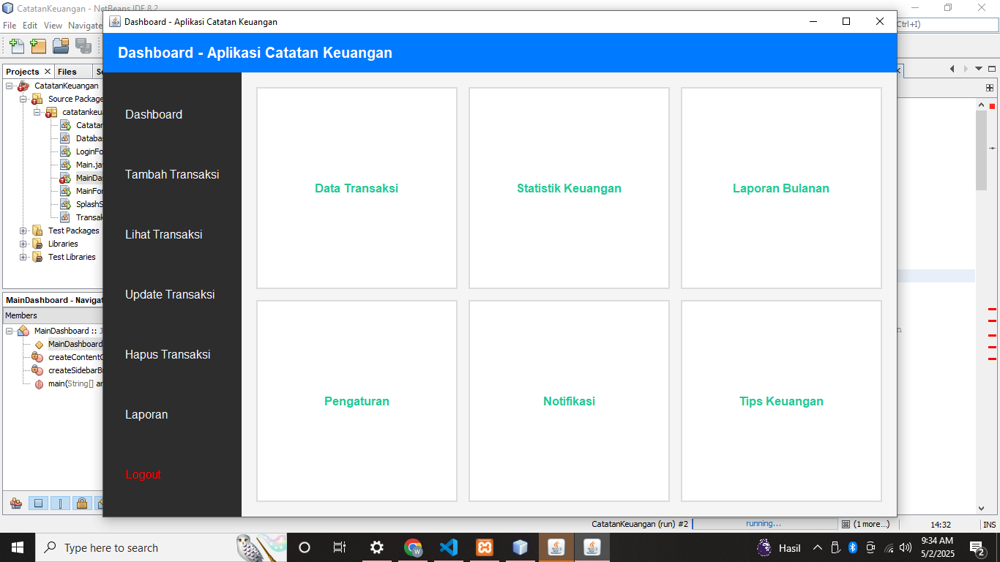
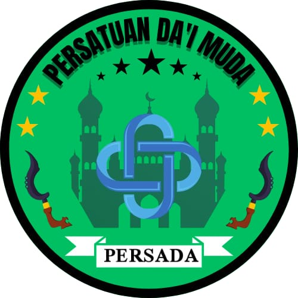
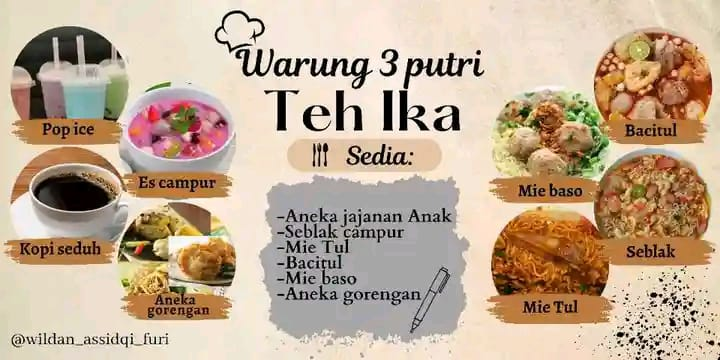

Galeri Proyek & Demo Project Gallery & Demos
Demo Aplikasi Market (Laravel 10) Market App Demo (Laravel 10)
Video screen record sistem marketplace yang responsif, mencakup katalog produk, manajemen pembeli, dan simulasi transaksi. Screen record video of a responsive marketplace system, covering product catalog, buyer management, and transaction simulation.
Demo Aplikasi Sosial Media Sederhana Simple Social Media App Demo
Fitur dasar sosial media: post status, like, dan interaksi pengguna dalam antarmuka yang bersih. Basic social media features: status posts, likes, and user interaction in a clean interface.

Analisis & Perancangan Sistem Klinik (PDF) Clinic Info System Analysis & Design (PDF)
Dokumen lengkap UML (Use Case, Activity, Sequence, Class Diagram). Full UML documentation (Use Case, Activity, Sequence, Class Diagram).
Buka Dokumen PDF Open PDF Document
Website Majelis Ta'lim Saung Ngopi Majelis Ta'lim Saung Ngopi Website
Kunjungi Website (Live) Visit Website (Live)
Manajemen Keuangan Desktop (Java) Desktop Financial Management (Java)
Logo Majelis Ta'lim (Baru)

Logo Dai Muda (Persada)

Banner Warung (Canva)

Pamflet Santri Baru
(Beberapa proyek pilihan yang menunjukkan perkembangan keahlian saya.) (A selection of projects demonstrating my skill progression.)